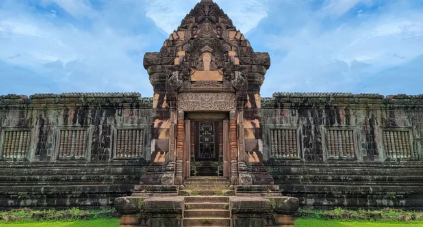
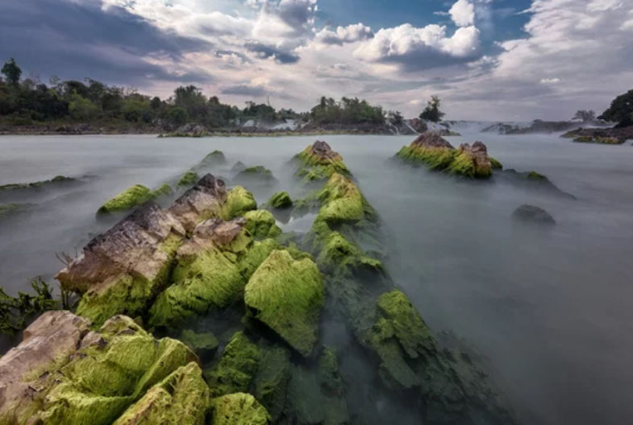
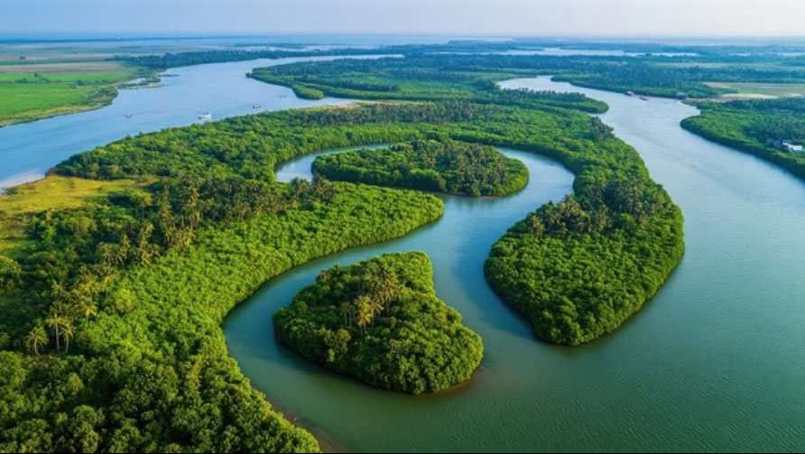

Majestic Mekong & Ancient Ruins
Harmony of History and Nature
Experience the timeless flow of the Mekong River and the echoes of ancient civilizations through stone monuments. Southern Laos is a spiritual home where tranquility meets adventure.
A peaceful land of temples, mountains, and the timeless Mekong River.
Iconic Landmarks & Cities
A tranquil Southeast Asian nation shaped by Buddhist traditions, French colonial heritage, and the Mekong River. From the calm of Luang Prabang to the limestone landscapes of Vang Vieng, it offers a journey through nature, history, and quiet charm.
From the UNESCO World Heritage town of Luang Prabang to mystical caves and grand waterfalls. A journey to Northern Laos, where time seems to stand still amidst rich living culture and tranquility.
Wat Xieng Thong
The "Temple of the Golden City," known as the most elegant temple in Laos.
Built in 1560, this temple features an elegant roof that sweeps low toward the ground. The "Tree of Life" mosaic on the back wall of the main hall is a masterpiece. Its golden decorations shimmering in the sunset are a breathtaking sight.
Kuang Si Falls
A stunning three-tiered waterfall with emerald green waters.
Located about 30km from Luang Prabang, these falls are formed by crystal-clear water filtered through limestone. The pools are perfect for swimming, offering a luxurious time of relaxation surrounded by forest negative ions.
Pak Ou Caves
Mystical caves overlooking the Mekong, home to thousands of Buddha statues.
Accessible by boat up the Mekong River, these two caves contain over 4,000 Buddha statues of various sizes, left by locals over centuries. It's a place filled with spiritual energy where the river's flow meets cavernous silence.
Exploring Major Cities

Luang Prabang
A UNESCO World Heritage city filled with beautiful temples and French colonial architecture, widely regarded as Laos’s most charming ancient c

Luang Namtha
A gateway to ecotourism, offering authentic trekking experiences and rich multiethnic cultures.

Muang Xay
The heart of Oudomxay, thriving as a lively crossroads of trade routes and cultural exchange.

Luang Prabang
Highlands and tea plantations. A historic tea-growing region near the Chinese border.
From the peaceful capital of Vientiane nestled along the Mekong River to Vang Vieng where stunning karst landscapes unfold. Discover the heart of Laos where tradition and adventure intersect.
Vientiane: Where Heritage Meets the Mekong
A relaxed capital of golden temples, French colonial charm, and riverside life along the Mekong. Vientiane offers a calm introduction to Laos’s culture and history.
Patuxai (Victory Gate)
An iconic monument modeled after the Arc de Triomphe in Paris, but adorned with traditional Lao motifs. You can enjoy a panoramic view of the city from the upper floors.
Pha That Luang
The national symbol of Laos, this golden stupa is said to contain a relic of the Buddha. It glows divinely in the late afternoon sun.


Vang Vieng: A Haven of Adventure and Serenity
Once a backpacker's mecca, it has evolved into a high-quality nature resort. The gentle flow of the Nam Song River and the jagged limestone mountains create breathtakingly beautiful scenery.
Kayaking on the Nam Song River
The karst mountains viewed from the calm water are spectacular. Tubing at sunset is also popular.
Blue Lagoon
A mysterious emerald-blue natural pool. Experience nature's coolness while swimming in crystal-clear water.


Experience the timeless flow of the Mekong River and the echoes of ancient civilizations through stone monuments. Southern Laos is a spiritual home where tranquility meets adventure.

Wat Phou
Ancient RuinsA UNESCO World Heritage site. This pre-Angkorian Khmer temple complex at the base of Mount Phou Khao exudes a sacredness that has transcended a millennium.

Khone Phapheng Falls
Majestic NatureKnown as the "Niagara of the East," these falls are the largest by volume in Southeast Asia. Witness the raw, overwhelming power of the Mekong.

Si Phan Don
Island LifeThe 4,000 Islands. A place where time seems to stand still. Discover the ultimate relaxation amidst the gentle currents of the archipelago.
Explore Key Cities

Pakse
The gateway to the south. A peaceful trading hub where the Mekong and Sedone rivers converge.

Champasak
The former royal capital. A quiet riverside town retaining the nostalgic charm of the French colonial era.
Flavors of the Mekong
From fragrant herbs and sticky rice to grilled river fish and spicy salads, Laos’s cuisine reflects the simple richness of life along the Mekong River and centuries of regional tradition.

Khao Soy
A Luang Prabang specialty of flat rice noodles topped with a savory, spicy meat ragu (tomato and minced pork). Unlike the Thai version, the soup is clear, and it's best enjoyed with plenty of fresh herbs.

Or Lam
A traditional Luang Prabang stew made with eggplant, mushrooms, beans, and dried buffalo meat. It is seasoned with "sakhaan" (chili wood) for a unique peppery kick and deep, nourishing flavor.

Larb
A national dish meaning "good luck." A fragrant salad made with finely minced meat or fish, tossed with mint, lime, and toasted rice powder.

Tam Mak Hoong
Spicy green papaya salad. An exquisite balance of chili heat, lime acidity, and the deep savory flavor of padaek (fermented fish sauce).

Khao Jee
A Luang Prabang specialty of flat rice noodles topped with a savory, spicy meat ragu (tomato and minced pork). Unlike the Thai version, the soup is clear, and it's best enjoyed with plenty of fresh herbs.

Khao Nom Kok
Small coconut milk and rice flour pancakes. Crispy on the outside with a creamy center.
ラオス人民民主共和国の歴史
Lao People's Democratic Republic
From the ancient kingdom of Lan Xang to French colonial rule and the establishment of the Lao People’s Democratic Republic in 1975,
Laos’s history reflects resilience, Buddhist heritage, and the enduring influence of the Mekong River.
古代
ムアン（都市国家）時代 （紀元前～13世紀）
ラーオ族がメコン川流域に形成した小規模な都市国家が存在。
クメール帝国の影響 （9世紀～13世紀）
現在のラオス南部がクメール帝国の支配下に入り、文化的影響を受ける。
中世
ラーンサーン王国 （1353年～1707年）
ファー・グム王によって建国され、「百万頭の象の国」として知られる。上座部仏教が広まり、文化が発展。
三王国時代 （1707年～1779年）
ラーンサーン王国が分裂し、ルアンパバーン王国、ヴィエンチャン王国、チャンパーサック王国が成立。
近世
シャム（タイ）支配時代 （1779年～1893年）
三王国がシャムの属国となり、独立性を失う。
フランス保護領時代 （1893年～1949年）
フランス領インドシナの一部として統治される。
近現代・現代
ラオス王国 （1950年～1975年）
フランスから独立し、立憲君主制を採用。
1953年10月22日（完全独立）仏・ラオス条約により完全独立。
ラオス内戦 （1959年～1975年）
王政派と共産主義勢力（パテート・ラーオ）との間で内戦が勃発。
ラオス人民民主共和国 （1975年～現在）
内戦終結後、共産主義体制のもとで社会主義国家として運営される
資料によって微妙に年代が違う フランス保護領時代
歴史の資料（教科書、外務省のデータ、現地の記念日など）によってラオスの独立や体制移行の年代・日付が異なるのは、「どの段階をもって独立（または開始）とみなすか」という定義や視点が異なるためです。
1.フランス保護領の「開始」：1893年 vs 1899年
・1893年（保護領化の始まり）：フランスがタイ（シャム）に圧力をかけ、メコン川東岸のラオス領土を割譲させた年です（仏暹条約）。ここから事実上のフランス支配が始まります。
・1899年（連邦への公式編入）：フランスが、すでに統治していたベトナムやカンボジアとラオスを正式に一つにまとめ、「フランス領インドシナ連邦」の行政組織として公式に組み込んだ年です。
結論： 「支配が始まった年」なら1893年、「インドシナ連邦の一部として公式にスタートした年」なら1899年となります。
2.フランスからの「独立」：1893年～1949年 vs 1950年～1975年 vs 1953年
ここが一番複雑で、資料によって「ラオス王国」の開始年や「独立年」がバラバラになる最大の原因です。
・1949年（制限付きの独立）：フランス連合の枠内（フランスの傘下）で、一定の自治権を持つ「ラオス王国」の独立が認められました。そのため、資料によってはここから「ラオス王国」が始まったと記述されます。
・1950年（本格的な国としての始動）：前年に認められた独立に基づき、実際に政府や憲法体制が本格的に動き出した時期を指す場合に、王国時代の始まりとして1950年と書かれることがあります。
・1953年10月22日（完全独立）：フランス・ラオス条約により、軍事権や外交権も含めた「完全な主権」をフランスから勝ち取った日です。現在のラオスという国家の歴史において、フランスからの完全独立はこの1953年を指すのが最も一般的です。
3.内戦の「開始」：1953年 vs 1959年
・1953年（事実上の始まり）：フランスから独立した直後から、右派（王政派）、中立派、左派（共産主義パテート・ラーオ）の3勢力による権力争いがすでに始まっていました。
・1959年（本格的な武力衝突）：それまでの政治闘争から、アメリカや北ベトナムの介入が本格化し、大規模な「戦争（内戦）」として激化した年です。学校の教科書などでは、ここからを「ラオス内戦」と定義することが多いです。
4.現代体制の「成立」：1973年 vs 1975年
・1973年（和平協定）：長引く内戦を終わらせるため、「ビエンチャン協定」が結ばれ、いったん停戦と連立政府の樹立が決まった年です。
・1975年12月2日（国家樹立）：隣国ベトナムなどの情勢急変に合わせ、共産勢力が完全に実権を握り、王政を廃止して「ラオス人民民主共和国」の成立を宣言した日です。これが現在のラオスの「建国記念日（ナショナルデー）」となっています。
まとめ
1893年：フランスの支配開始
1953年：フランスから完全独立（ラオス王国の完全なスタート）
1975年：王政が終わり、現在の社会主義国家が成立
フランスからの独立に際し、ベトナムのような大規模な独立戦争（第一次インドシナ戦争）にならなかった理由
1.人口が少なく、強大な軍隊を持てなかった
ベトナムは当時から人口が多く、強固な民族意識と大規模な軍隊（ベトミン）を組織する力がありました。一方のラオスは人口が非常に少なく、大部分が険しい山岳地帯に分散して暮らしていました。フランスを正面から圧倒できるような独自の強力な軍事組織を、ラオス単独で育てる基盤が物理的に乏しかったのです。
2.独立運動を率いる「知識層」の絶対的な不足
フランス統治下のラオスでは教育がほとんど普及せず、1940年代になっても国内に高等教育機関（大学など）がありませんでした。ベトナムではフランス留学帰りの知識人が中心となって激しい民族独立運動を展開しましたが、ラオスではエリート層（主に王族や一部の貴族）がごく少数しかおらず、国民全体を巻き込む組織的な抗仏運動へと発展しにくかったのです。
3.王族（指導者層）が「フランスの保護」を求めていた
ラオスは、隣国タイ（シャム）からの侵略や割譲の脅威に常にさらされてきた歴史があります。そのため、ラオスの王族や支配層にとって、フランスは「侵略者」であると同時に、「タイから自分たちを守ってくれる後ろ盾（保護者）」という側面もありました。フランスを完全に排除して自立することへの危機感が、初期の段階では強かったのです。
4.フランス側の「戦術的撤退」とベトナム戦線の優先
これが最大の理由です。フランスにとってインドシナの最重要拠点は、経済的価値が圧倒的に高いベトナムでした。ベトナムでの戦争が激化するにつれ、フランスはラオスやカンボジアに軍力を割く余裕がなくなりました。そのためフランスは、「ラオスとカンボジアには形だけの独立を早く与えて味方（フランス連合）に引き留め、ベトナムとの戦争に集中しよう」と考えました。ラオス側もこれを利用し、激しい血を流すことなく、交渉によって1949年の自治権獲得、そして1953年の完全独立を勝ち取ることができたのです。
ラオス人民民主共和国（現在のラオス）には、歴史や国家の成り立ちに応じて複数の国民的英雄がいます。
1.現代ラオスの「建国の父」
カイソーン・ポムウィハーン (Kaysone Phomvihane)
概要：ラオス人民民主共和国の初代首相および第2代国家主席を務め、「建国の父」として崇められています。現在の2万、5万、10万キップなどの紙幣の肖像画にもなっており、首都ビエンチャンには彼の功績を称える広大な「カイソーン・ポムウィハーン博物館」が建てられています。
スパーヌウォン親王 (Souphanouvong)
概要：初代国家主席を務めた人物です。もともとはルアンパバーン王国の王族の出身でありながら、共産主義の革命運動（パテート・ラーオ）を率いたため、「赤い王子」の異名を持ちます。王族の地位を捨てて民衆とともに戦った英雄として、国民から深く慕われました。
2.歴史上の偉大な「国王（民族の英雄）」
社会主義国となった現在でも、ラオスという国家・民族のアイデンティティを築いた過去の王たちは「歴史的英雄」として非常に高く評価されており、街中に巨大な銅像が建てられています。
ファグム王 (Fa Ngum)
概要：1353年にラオス史上初の統一国家であるランサン王国（百万頭の象の国）を建国した王です。現在のラオスの領土の基礎を築き、カンボジアから上座部仏教を導入して国教とした、民族最大の英雄のひとりです。
セーターティラート王 (Setthathirath)
概要：16世紀のラーンサーン王国の偉大な王です。首都をルアンパバーンから現在のビエンチャンへと遷都しました。（王国が3つに分裂するのは、この遷都から約150年も後の話になります。）ラオスの象徴である黄金の仏塔「タート・ルアン」を建立した人物であり、仏塔の前には今も彼の銅像が鎮座しています。
アヌウォン王 (Anouvong)
概要：19世紀初頭のビエンチャン王国の国王です。当時ラオスを支配していた隣国シャム（現在のタイ）の支配に対して、民族の独立と解放を掲げて反乱を起こした悲劇の英雄です。ビエンチャンのメコン川沿いには、タイの方角を力強く見据えるアヌウォン王の巨大な銅像が立っており、市民の心の拠り所となっています。
ラオスの地理をまとめると、次のようになります。
・南と西（カンボジア・タイ）：平地や川でつながっており、上座部仏教がスムーズに流入した。
・東（ベトナム）：険しい山脈に阻まれ、中国系の文化（大乗仏教）が入ってこなかった。
・海：面していないため、海からのイスラム教の影響も受けなかった。
ラオスの特徴
1. 人々がとにかく穏やかで優しい
ラオスの仏教（上座部仏教）は、人々の日常生活と完全に溶け込んでいます。「徳を積む（タムブン）」という考え方が根底にあるため、他者に対してとても寛容で、怒ったり声を荒らげたりする人がほとんどいません。東南アジア特有の「客引きのしつこさ」もラオスでは驚くほど少なく、静かに旅を楽しめます。
2. 毎朝行われる「托鉢（たくはつ）」の美しさ
ルアンパバーンをはじめ、ラオスでは毎朝、オレンジ色の袈裟を着た僧侶たちが一列になって街を歩き、住民からお供え物（もち米など）を受け取る「托鉢」が行われます。まだ薄暗い朝の静寂の中に響く足音と、人々の祈りの姿は、見るだけで心が洗われるような神聖な雰囲気です。
3. 「ボペンニャン（問題ない、気にしない）」の精神
タイの「マイペンライ」のように、ラオスには「ボペンニャン」という言葉があります。「大丈夫だよ」「なんとかなるさ」という意味で、時間に追われず、今この瞬間をのんびり生きるラオスの人々の心のゆとりを表しています。現代の忙しい日本で暮らす人にとって、この空気感は最高に癒やされます。